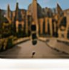
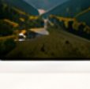

9:41
Yerlər
Hamısı
Görməli yerlər
Restoranlar
Təbiət
Otel
Muzey
Quba, 24 yer
Yaxınlıqdakı yerlər
Hamısına bax
Quba meşə pikniki
Təbiət • Quba
4.8
(128)
5 km

İçərişəhər
Tarixi yer • Bakı
4.9
(256)
12 km

Şahdağ Turizm Mərkəzi
Təbiət • Qusar
4.7
(98)
25 km
Xınalıq kəndi
Kənd • Quba
4.9
(1,248)
57 km
Discover
Explore
Trips
Profile